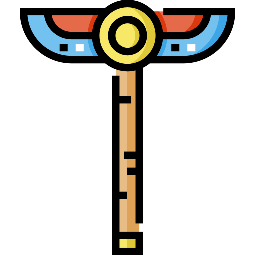

Pyramids
Perfectly aligned with the stars, pyramids were cosmic markers and channels for pharaonic ascension.
Monuments of eternity where pharaohs rest under Anubis' eternal guard.
The tombs of Egypt were never mere graves. They were palaces for eternity—architectural statements of power, repositories of wisdom, and gateways to the afterlife.
The architects understood sacred geometry. The engineers mastered the mathematics of stone. Every detail served a purpose—spiritual and eternal.
Perfectly aligned with the stars, pyramids were cosmic markers and channels for pharaonic ascension.
Hidden in the Valley of the Kings, rock-cut tombs protected royal remains with thousands of decorated chambers.
Mortuary temples served as eternal monuments where priests conducted sacred rituals in cosmic harmony.
The last standing wonder of the ancient world, built with such precision it stands eternally unchanged. Rising 146.5 meters, it touched the heavens themselves.
Inside: 2.3 million perfectly cut stone blocks with no mortar, no reinforcement—only geometry and divine will.
Discover the sacred artifacts buried within eternal monuments.

Explore Artifacts